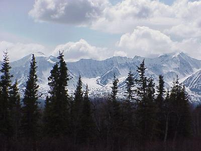
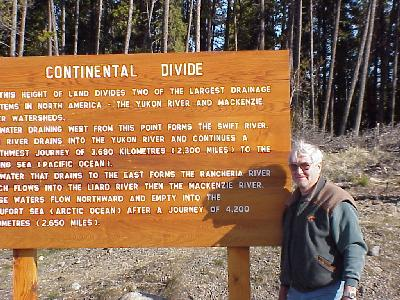
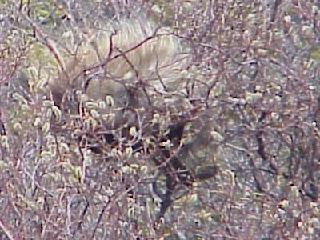
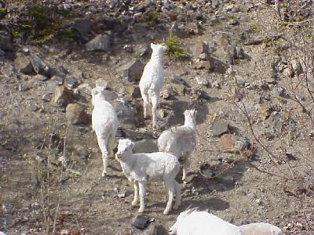

May 26, 3944 miles
| We started the day packing up camp and leaving at 8:00. A little later than normal start, but no big plans for the day other than sights as we come by them and putting some miles on. | |
| As you might guess, the big sight is mountains, mountains, and more mountains. At least they are much more beautiful than the plains, but the time in the car gets a little boring none the less. |  |
| It is tough to call this a highlight for the day, but we crossed the continential divide. This is actually the third time we have crossed it, just the first time it has been marked. |  |
| Ok, we had to add an animal or two today also. This thing in the bush is a porcupine. It was very marshy there so I was not going to go in and try and get him to turn around. Donald though about it though. |  |
| At Sheep Mountain, part of the Kalune mountain Range, we finally saw Dall Sheep, lots of them. They were all over the mountain (a little too far for pictures), but when we left the visitor's center we found them right down at road level. |  |
| We stopped in the town of Whitehorse
today, a town of 25,000 people. We took the MacBride
Museum in; it was a little eclectic, covering animals of
the Yukon, geology, and the Gold Rush, but the exibits
were well done and worth the stop. We pulled into the camg grounds at Burwash Landing at 6:30 after traveling 375 miles. Again we camped not too far off a frozen (partialy) lake, but we were well protected from the winds. Wildlife for the day included: porcupine (1); dall sheep (bunch). |
|